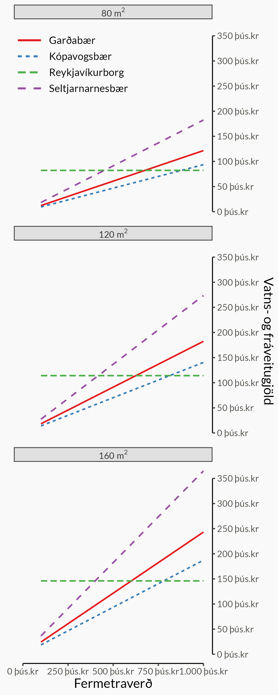

| Samantekt á vatns- og fráveitugjöldum í nokkrum sveitarfélögum höfuðborgarsvæðis | |||
|---|---|---|---|
| Sveitarfélag | Fráveitugjald | Vatnsgjald | Samtals |
| Reykjavíkurborg | 12.262kr + 473,29kr á hvern fermeter | 5.085kr + 197,32kr á hvern fermeter | 17.347kr + 670.61kr á hvern fermeter |
| Kópavogsbær | 0,065% af fasteignamati | 0.06% af fasteignamati | 0.125% af fasteignamati |
| Garðabær | 0.085% af fasteignamati | 0.08% af fasteignamati | 0.165% af fasteignamati |
| Seltjarnarnesbær | 0.14% af fasteignamati | 0.086% af fasteignamati | 0.226% af fasteignamati |
| Reiknað út frá álögðum fasteignaskatti árið 2023 samkvæmt Sambandi íslenskra sveitarfélaga https://samband.is/verkefnin/fjarmal/tekjustofnar-sveitarfelaga/fasteignaskattur/ |
|||
Fasteignagjöld
Samhliða fasteignaskatti innheimta sveitarfélög ýmis gjöld svo sem fráveitu- og vatnsgjöld, lóðaleigu og sorphreinsigjald og sorpeyðingargjald. Saman kallast þessi gjöld gjarnan fasteignagjöld. Sum þessara gjalda eru reiknuð hlutfallslega út frá fasteignamati fasteignar, en þetta getur verið mismunandi eftir sveitarfélagi.
Í þessari grein verður farið yfir þrjá undirliðina sem taka (sum staðar) mið af fasteignamati. Það eru fasteignaskattur, vatnsgjald og fráveitugjald.
Fasteignaskattur
Fasteignaskattar eru reiknaðir sem prósenta af fasteignamati. Lægstir eru þeir 0.17% í Kópavogsbæ, Garðabæ og Seltjarnarnesbæ, en hæstir 0.62% í Skaftárhreppi, Þingeyjarsveit, Bolungarvíkurkaupstað, Strandabyggð og Vopnafjarðarhreppi1. Þetta jafnast út að einhverju leyti því fasteignamat er hærra á höfuðborgarsvæðinu, en þó getur þessi mismunur haft áhrif á upphæð fasteignagjalda.
1 Samkvæmt álagningum árið 2023.
Vatns- og fráveitugjöld
Til að átta sig á muninum á þessum tveimur álagningaraðferðum getur borgað sig að skoða dæmi. Samkvæmt álagningum ársins 2023 var fráveitugjald í Kópavogsbæ reiknað sem 0,065% af fasteignamati en í Reykjavíkurborg reiknast það sem fast 12.262kr gjald auk 473,29 kr á hvern fermeter fasteignar. Sömuleiðis er vatnsgjald í Kópavogsbæ 0,06% af fasteignamati en í Reykjavíkurborg er það fast 5.084kr gjald auk 197,32kr á hvern fermeter.

Það fer eftir fermetraverði og stærð fasteignar hvort fyrirkomulagið skili sér í hærri útgjöldum fyrir eigandann. Myndin hér á hægri hönd sýnir þetta skýrt. Vatns- og fráveitugjöld í Reykjavíkurborg eru óháð fasteignamati og því hækka þau hvorki né lækka í takt við fermetraverð fasteignar. Því er öfugt farið í hinum sveitarfélögunum og hækka þessi gjöld samhliða fasteignamati eignarinnar. Ef fasteignamat hækkar um 10% hækka vatn- og fráveitugjöldin um sömu prósentu. Taflan að neðan ber saman hver vatns- og fráveitugjöldin yrðu í nokkrum fasteignum samkvæmt álagningu sveitarfélaganna.
| Samanburður á vatns- og fráveitugjöldum nokkurra fasteigna | |||||||
|---|---|---|---|---|---|---|---|
| m2 | Fasteignamat | Fermetraverð | Vatns- og fráveitugjöld | ||||
| Reykjavíkurborg | Kópavogsbær | Garðabær | Seltjarnarnes | ||||
| Fasteign 1 | 70,90 | 50.250.000kr | 708.745kr | 64.893kr | 60.300kr | 82.912kr | 113.565kr |
| Fasteign 2 | 199,00 | 149.250.000kr | 750.000kr | 150.798kr | 179.100kr | 246.262kr | 337.305kr |
| Fasteign 3 | 187,60 | 128.750.000kr | 686.301kr | 143.153kr | 154.500kr | 212.438kr | 290.975kr |
| Fasteign 4 | 137,80 | 78.150.000kr | 567.126kr | 109.757kr | 93.780kr | 128.948kr | 176.619kr |
Samanlagt
| Samantekt á vatns- og fráveitugjöldum í nokkrum sveitarfélögum höfuðborgarsvæðis | |||
|---|---|---|---|
| Sveitarfélag | Fráveitugjald | Vatnsgjald | Samtals |
| Reykjavíkurborg | 12.262kr + 473,29kr á hvern fermeter | 5.085kr + 197,32kr á hvern fermeter | 17.347kr + 670.61kr á hvern fermeter |
| Kópavogsbær | 0,065% af fasteignamati | 0.06% af fasteignamati | 0.125% af fasteignamati |
| Garðabær | 0.085% af fasteignamati | 0.08% af fasteignamati | 0.165% af fasteignamati |
| Seltjarnarnesbær | 0.14% af fasteignamati | 0.086% af fasteignamati | 0.226% af fasteignamati |
| Reiknað út frá álögðum fasteignaskatti árið 2023 samkvæmt Sambandi íslenskra sveitarfélaga https://samband.is/verkefnin/fjarmal/tekjustofnar-sveitarfelaga/fasteignaskattur/ |
|||
Fasteignamat og fasteignagjöld
Á hverju ári eru birtar uppfærslur á fasteignamati fasteigna. Einstaklingar í leit að sinni fyrstu íbúð fyllast angist yfir hækkandi fasteignaverði, en sömuleiðis getur hærra fasteignamat reynst eigendum bjarnagreiði þar sem hærra fasteignamat leiðir til hærri fasteignagjalda. Oft lítur fólk bara á fasteignaskattinn sjálfan þegar það skoðar hvaða áhrif hærri fasteignamat hefur á gjöldin, en réttast er að skoða vatns- og fráveitugjöldin sömuleiðis.
Fasteignaskattur er til dæmis hærri í Reykjavíkurborg (0,18%) en í Kópavogsbæ (0,17%). Því gætum við hugsað að hækkun fasteignamats hefur meiri áhrif á íbúann í Reykjavíkurborg. Ef við tökum þó vatns- og fráveitugjöld Kópavogsbæjar með í reikninginn sjáum við að fasteignagjöld Kópavogsbæjar byggja samtals á 0,295% af fasteignamati þar. E
Ef fasteignamat tveggja fasteigna, önnur í Reykjavíkurborg og hin í Kópavogsbæ, hækka um sömu krónutöluna munu því fasteignagjöld eignarinnar í Kópavogsbæ hækka meira, að því gefnu að allar álögur haldist fastar. Taflan að neðan sýnir hversu há prósenta af fasteigmati reiknast inn í fasteignagjöld hvers sveitarfélags fyrir sig. Hæsta prósentan er í Vesturbyggð, en þar byggja gjöldin samtals á 1,31% af fasteigmati, og lægsta prósentan er í Reykjavíkurborg, en þar byggja gjöldin samtals á 0,18% af fasteignamati2.
2 Á móti kemur að Reykjavíkurborg rukkar byggt á grunngjaldi og fermetrafjölda eignar. Slík uppsetning getur bitnað á fasteignum sem eru stórar og ódýrar líkt og sást á Mynd 1 að ofan.
| Sveitarfélögum landsins raðað eftir heildarhlutfalli fasteignamats sem skilar sér í fasteignagjöld | ||||
Samhliða fasteignaskatti innheimta sveitarfélög ýmis gjöld svo sem fráveitu- og vatnsgjöld, lóðaleigu og sorpgjald. Saman kallast þessi gjöld gjarnan fasteignagjöld. Sum þessara gjalda eru reiknuð hlutfallslega út frá fasteignamati fasteignar eða út frá stærð hennar í fermetrum, og þetta getur verið mismunandi eftir sveitarfélagi
|
||||
| Undirliðir | Fasteignagjöld | |||
|---|---|---|---|---|
| Fasteignaskattur | Fráveitugjöld | Vatnsgjöld | ||
| Reykjavíkurborg | 0.18% | 0.00% | 0.00% | 0.18% |
| Akraneskaupstaður | 0.23% | 0.00% | 0.00% | 0.23% |
| Kópavogsbær | 0.17% | 0.07% | 0.06% | 0.29% |
| Akureyrarbær | 0.31% | 0.00% | 0.00% | 0.31% |
| Garðabær | 0.17% | 0.09% | 0.08% | 0.33% |
| Borgarbyggð | 0.35% | 0.00% | 0.00% | 0.35% |
| Mosfellsbær | 0.20% | 0.09% | 0.07% | 0.35% |
| Reykjanesbær | 0.25% | 0.10% | 0.00% | 0.35% |
| Hvalfjarðarsveit | 0.36% | 0.00% | 0.00% | 0.36% |
| Hafnarfjarðarkaupstaður | 0.25% | 0.09% | 0.04% | 0.37% |
| Seltjarnarnesbær | 0.17% | 0.14% | 0.09% | 0.39% |
| Vestmannaeyjabær | 0.27% | 0.20% | 0.00% | 0.47% |
| Eyjafjarðarsveit | 0.39% | 0.10% | 0.00% | 0.49% |
| Hveragerðisbær | 0.33% | 0.15% | 0.02% | 0.49% |
| Grindavíkurbær | 0.30% | 0.15% | 0.04% | 0.50% |
| Dalvíkurbyggð | 0.50% | 0.00% | 0.00% | 0.50% |
| Sveitarfélagið Árborg | 0.25% | 0.10% | 0.15% | 0.50% |
| Sveitarfélagið Stykkishólmur | 0.38% | 0.15% | 0.00% | 0.53% |
| Rangárþing ytra | 0.33% | 0.22% | 0.00% | 0.55% |
| Suðurnesjabær | 0.28% | 0.12% | 0.16% | 0.56% |
| Hörgársveit | 0.40% | 0.18% | 0.00% | 0.58% |
| Sveitarfélagið Ölfus | 0.24% | 0.21% | 0.13% | 0.58% |
| Sveitarfélagið Vogar | 0.43% | 0.09% | 0.08% | 0.60% |
| Norðurþing | 0.46% | 0.10% | 0.05% | 0.61% |
| Svalbarðsstrandarhr. | 0.42% | 0.19% | 0.00% | 0.61% |
| Flóahreppur | 0.47% | 0.00% | 0.20% | 0.67% |
| Mýrdalshreppur | 0.33% | 0.20% | 0.15% | 0.68% |
| Grundarfjarðarbær | 0.50% | 0.19% | 0.00% | 0.69% |
| Fjarðabyggð | 0.42% | 0.28% | 0.00% | 0.70% |
| Ísafjarðarbær | 0.56% | 0.15% | 0.02% | 0.73% |
| Rangárþing eystra | 0.38% | 0.20% | 0.18% | 0.75% |
| Snæfellsbær | 0.44% | 0.11% | 0.21% | 0.76% |
| Múlaþing | 0.48% | 0.33% | 0.00% | 0.80% |
| Skagafjörður | 0.48% | 0.19% | 0.16% | 0.82% |
| Skeiða- og Gnúpverjahr. | 0.40% | 0.25% | 0.20% | 0.85% |
| Sveitarfélagið Hornafjörður | 0.37% | 0.33% | 0.16% | 0.86% |
| Skaftárhreppur | 0.62% | 0.25% | 0.00% | 0.88% |
| Húnaþing vestra | 0.40% | 0.21% | 0.27% | 0.88% |
| Grýtubakkahreppur | 0.48% | 0.25% | 0.20% | 0.93% |
| Hrunamannahreppur | 0.48% | 0.25% | 0.21% | 0.94% |
| Þingeyjarsveit | 0.62% | 0.12% | 0.21% | 0.95% |
| Sveitarfélagið Skagaströnd | 0.48% | 0.24% | 0.24% | 0.96% |
| Grímsn.- og Grafningshr. | 0.46% | 0.27% | 0.23% | 0.96% |
| Dalabyggð | 0.50% | 0.19% | 0.28% | 0.97% |
| Súðavíkurhreppur | 0.45% | 0.22% | 0.35% | 1.02% |
| Húnabyggð | 0.50% | 0.25% | 0.28% | 1.03% |
| Fjallabyggð | 0.46% | 0.29% | 0.29% | 1.04% |
| Bláskógabyggð | 0.48% | 0.27% | 0.30% | 1.05% |
| Bolungarvíkurkaupstaður | 0.62% | 0.20% | 0.35% | 1.18% |
| Strandabyggð | 0.62% | 0.25% | 0.30% | 1.18% |
| Reykhólahreppur | 0.50% | 0.20% | 0.50% | 1.20% |
| Langanesbyggð | 0.60% | 0.28% | 0.32% | 1.20% |
| Vopnafjarðarhreppur | 0.62% | 0.32% | 0.30% | 1.24% |
| Tálknafjarðarhreppur | 0.50% | 0.40% | 0.35% | 1.25% |
| Vesturbyggð | 0.55% | 0.38% | 0.38% | 1.31% |
| Gögn og kóði: https://github.com/bgautijonsson/fasteignagjold Nánar um fasteignaskatta og fasteignagjöld: https://samband.is/verkefnin/fjarmal/tekjustofnar-sveitarfelaga/fasteignaskattur/ |
||||
Fasteignamat
Fasteignamat hækkar hins vegar ekki um sömu krónutölu yfir allt landið, heldur er það breytilegt frá ári til árs. Fasteignaskrá hefur birt sundurliðun á hækkun fasteignamats eftir sveitarfélagi og tegund fasteignar. Á mynd A eru þessar tölur teknar saman fyrir íbúðareignir, það er bæði fjölbýli og einbýli. Þar sjáum við að fasteignamat hækkaði að meðaltali mest í Seltjarnarnesbæ eða um 16,6 milljónir króna3, en minnst í Grundarfjarðarbæ þar sem það lækkaði að meðaltali um 275 þúsund krónur.
Við getum svo notað ofangreindar tölur um meðaltal hækkunar fasteignamats og hlutfall fasteignamats í fasteignagjöldum til að reikna vænta hækkun fasteignagjalda út frá hækkun fasteignamats. Það er við getum svarað spurningunni: „Hvað munu fasteignagjöld hækka mikið að meðaltali í sveitarfélögum landsins að því gefnu að álögur haldist fastar?“ Á mynd C sjáum við samantekt á þessum tölum. Samkvæmt þessum forsendum munu fasteignagjöld hækka mest að meðaltali í Vesturbyggð eða um 85 þúsund krónur, en minnst í Grundarfjarðarbæ þar sem þau munu lækka um 1.900kr. Við sjáum líka að þótt fasteignamat hækkaði langmest í Seltjarnarnesbæ vegur fasteignamatið svo lítið í gjöldunum þar að vænt hækkun fasteignagjalda verður 65 þúsund krónur, ekki jafnmikil og í Vesturbyggð.
Höfum þó í huga að mörg sveitarfélög eru nú þegar farin að tilkynna lækkanir á fasteignasköttum og því munu fasteignagjöld væntanlega hækka minna en þessi greining gefur til kynna. Munu sveitarfélögin sömuleiðis lækka vogir fasteignamats í vatns- og fráveitugjöldum?